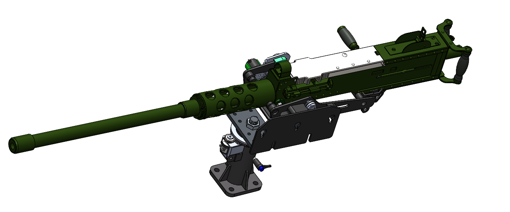

Galería de Proyectos

Simulador Mecánico Bote Fluvial
Prototipo a escala para ONIRIS-ID. Análisis de materiales, experimentación y validación técnica de simulador fluvial.

Mecanismos de Encoders M2.50
Diseño, impresión e implementación de mecanismos de encoders para ejes X Y de Simulador de Ametralladora M2.50.

Automatización de Granja de impresión 3D
Integración de sensores IoT y programación Python para optimizar la interacción en la granja de impresión 3D.

Puesta en Marcha SCORBOT
Implementación de sistemas IoT, restauración de mecánica y desarrollo de controlador de robot SCORBOT para aplicaciones industriales.